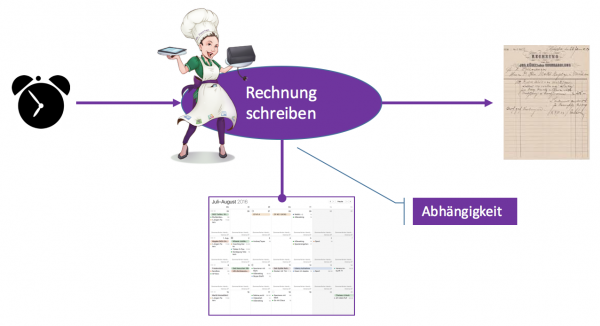
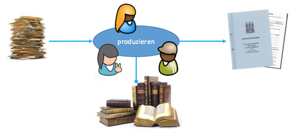
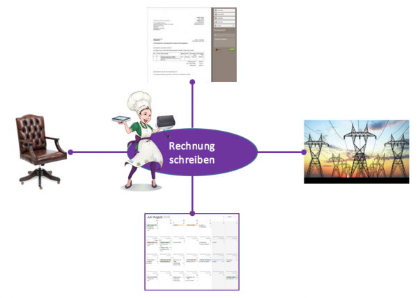
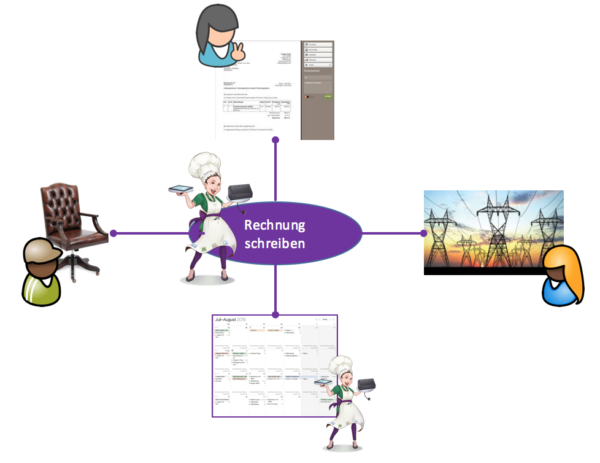
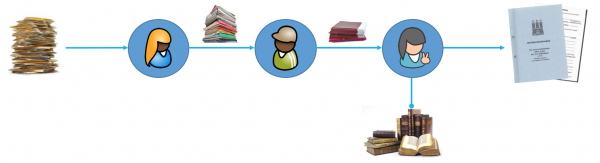
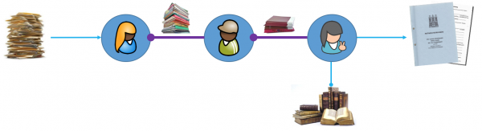
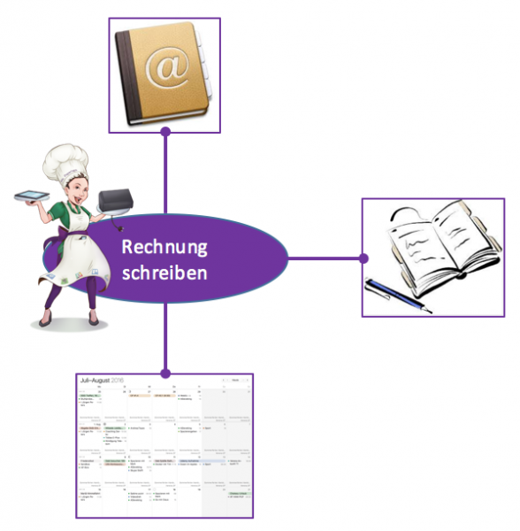
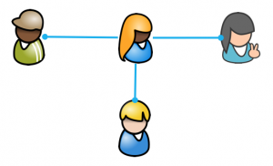
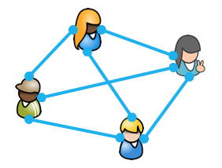

Kollaborieren Sie schon oder ärgern Sie sich noch?
Zweck der Arbeit im Office ist die Produktion von Inhalten, von Content. Je flüssiger, je verschwendungsärmer das klappt, desto besser. Yay! 🙂
Aber wie werden diese Inhalte hergestellt? Darüber ist auch nachzudenken auf dem Weg zu einem Lean Digital Office, das flutscht und Freude macht. Eine saubere Kollaboration eben.
Manche Inhalte werden von einer Person in einem Arbeitsschritt hergestellt. Wenn ich z.B. eine Rechnung schreibe, bin ich allein mit meinem Kalender und erledige das in fünf Minuten.

Viele Inhalte, vielleicht sogar die meisten, entstehen jedoch durch mehrere Personen in mehreren Arbeitsschritten.

Immer Ärger mit der Zusammenarbeit
Und da stellt sich doch die Frage: Entstehen diese Inhalte flüssig kollaborativ oder hakt es immer wieder und alle ärgern sich?
Wie ist das bei Ihnen? Wie häufig ärgern Sie sich, wenn Sie bei der Produktion von Inhalten mit anderen zusammenarbeiten müssen? Wenn Sie geradezu abhängig von anderen sind, um Ihren Content abzuliefern?
Meine Beobachtung ist, dass es im Office viel Anlass für kleinen und auch mal großen Ärger gibt. Der Frust lauert überall:
- Der Kollege liefert nicht, was sie brauchen.
- Der Chef setzt eine unmögliche Deadline.
- Die nötigen Dokumente sind nicht zu finden.
- Der Drucker spinnt wieder mal.
- Der Kunde unterbricht Ihre Konzentration mit einem Anruf.
- Der Kollege fragt per Telefon nach, ob Sie seine Mail von eben schon bekommen haben.
- Sie haben keinen Überblick über den Stand der Dinge.
- Sie sind unsicher, was als nächstes zu tun ist.
Soll ich weitermachen?
Flüssiger Fortschritt ist etwas anderes, oder?
Vergleichen Sie das mit dem Bild einer Industrieproduktion! Da läuft es stromlinienförmig und reibungsfrei. Nicht, dass es keinen Ärger gäbe. Doch der ist im Verhältnis zum Output viel geringer. Das macht ja gerade industrielle (oder auch schon gute handwerkliche) Produktion aus. Die Dinge klappen, weil sie immer und immer wieder in sehr ähnlicher Weise getan werden.
Hohe Anforderungen im Office
Anders bei der Büroarbeit. Die ist viel bunter. Dort gibt es auch Wiederholungen, doch im Verhältnis sind die seltener. Das Erstmalige, das Veränderte überwiegt. Und wo nicht, da wurde schon automatisiert oder die Automatisierung steht vor der Tür. Software MailChimp bis SAP ist der Beweis.
Vielfalt, Überraschung und Unschärfe sind mithin stete Begleiter aller Arbeiten im Office. Damit die Content-Produktion trotzdem flüssig läuft, braucht es allerdings nicht nur fachliche Kompetenz, sondern auch:
- Vertrauen
- Verlässlichkeit
- Kommunikation
Ohne viel Vertrauen, hohe Verlässlichkeit und reichliche Kommunikation wird es mit einer flüssigen gemeinschaftlichen Inhaltsproduktion nichts. Das sind die Pfeiler von echter Kollaboration (engl. collaboration).
Am Grundvertrauen in Ihre Kollegen, Mitarbeiter, Kunden kann ich wenig tun. Dafür ist zunächst einmal ihr Menschenbild zuständig. Glauben Sie, dass andere fleißig und sorgfältig und ihnen wohlgesonnen sind? Oder glauben Sie, dass andere eher faul und schlampig sind und sich nicht um Sie scheren? Bonusfrage: Was glauben Sie, dass andere von Ihnen glauben, das Sie glauben? 😉
Falsches Wertesystem erschwert Kollaboration
Ich habe, das kann ich sagen, ein positives Menschenbild. Ich glaube, dass alle sich an ihren Arbeitsplätzen sehr bemühen, einen guten Job zu machen. Sie sind fleißig und sorgfältig und einander wohlgesonnen – im Rahmen dessen, wie sie das Wertesystem/Bewertungssystem des Unternehmens verstehen.
Der Zusatz ist wichtig: „Wie sie das Wertesystem des Unternehmens verstehen“! Denn solange die Produktion von gutem Content und Job-Sicherheit nicht dasselbe sind, gibt es einen Zielkonflikt. Und das führt auf die eine oder andere Weise über kurz oder lang zu… Ärger, Frust, Unsicherheit, Angst.
Oberflächlich mag es so aussehen, als sei „gute Arbeit“, also hochqualitativer Content, die alleinige Messlatte. Doch solange noch an den allermeisten Arbeitsplätzen zuerst die Arbeitszeit gemessen und der Arbeitsort bestimmt wird, sind gegenteilige Behauptungen nur Lippenbekenntnisse. Fragen Sie sich einfach: „Was würde mein Chef lieber sehen: guten Content, egal wo ich ihn produziere, oder mich an meinem Arbeitsplatz?“
Aber ich schweife ab… 😉 Allerdings nur ein wenig. Denn die kontraproduktive Verschwendung lauert überall. Zum Beispiel auch im Pendeln zur Arbeit oder im Zwang zum Ausstempeln für die Mittagspause. Denken Sie immer daran: Verschwendung ist, wovon man nicht sagen kann „Mehr wäre gut!“
Also: Am Grundvertrauen, am Menschenbild kann ich nicht viel tun, allemal nicht direkt. Doch wenn es an Verlässlichkeit und Kommunikation mangelt und deshalb die Zusammenarbeit ärgerlich und stockend ist, dann habe ich ein paar Pfeile in meinem Köcher.
Kollaboration braucht Verlässlichkeit
Wenn ich allein eine Aufgabe erledige, also z.B. eine Rechnung schreibe, dann geht das auch nur flüssig, wenn ich mich auf einiges verlassen kann. Ich muss mich z.B. darauf verlassen, dass die Einträge in meinem Kalender aktuell und vollständig sind. Dann muss ich mich darauf verlassen, dass meine Software fehlerfrei läuft. Dann muss ich mich darauf verlassen, dass der Strom nicht ausfällt. Ich muss mich sogar darauf verlassen, dass mein Stuhl nicht plötzlich zusammenbricht 😉
Von all diesen Dingen bin ich abhängig in dem Moment, da ich eine Rechnung schreibe.

Meiner Erfahrung nach, ist das kein Problem. Insofern kann ich mich jeden Monat ohne Bangen um meine Produktivität an das Rechnungschreiben machen. Die Fakturierung hat für mich das Level von industrieller Produktion, auch wenn noch nicht alles automatisch abläuft.
Auch wenn ich unmittelbar von Dingen abhängig bin, geht es mittelbar um Abhängigkeit von anderen Menschen. Denn die Dinge, die ich für den Content Rechnung brauche, werden immer wieder (oder wurden) von Menschen hergestellt.

Im Falle des Kalenders bin ich selbst dieser Mensch, in anderen Fällen verlasse ich mich auf Unbekannte, die irgendwo irgendwann einfach nur ihren Job machen.
Ich würde mich zwar nicht in einer Zusammenarbeit mit all diesen Menschen sehen. Denn wir streben nicht dasselbe unternehmerische Ziel an. (Obwohl… auf gesellschaftlicher Ebene könnte man vielleicht an eine Zusammenarbeit im Hinblick auf Wohlstand und Frieden sprechen.) Doch Verlässlichkeit ist eben auch bei indirekten Abhängigkeiten von der Arbeit anderer zentral.
Ohne Verlässlichkeit kein Vertrauen. Ohne Vertrauen wird alles langsam, umständlich, komplex. Das ist das Gegenteil von lean.
Um wie viel wichtiger ist also Verlässlichkeit bei Ihnen im Office, wenn Content nur in dirkter Kollaboration entstehen kann!

Sie sind für die meisten Aufgaben sehr eng abhängig von Ihren Kollegen. Und andere sind wiederum von Ihnen abhängig.
Im vorherigen Bild fließen Arbeitsprodukte von links nach rechts, bis am Ende Inhalt „heraustropft“. Abhängigkeiten hingegen weisen in die entgegengesetzte Richtung. Nachgelagerte Schritte sind abhängig von vorgelagerten:

Jeder ist da aufgerufen, stets hohe Zuverlässigkeit zu zeigen, sonst kommt die weitere Content-Produktion ins Stocken.
Und wie können Sie und Ihre Kollaborateure stets hohe Zuverlässigkeit an den Tag legen?
Zuverlässigkeit hat mindestens zwei Aspekte: Qualität und Pünktlichkeit
Qualität betrifft den Content. Ist der so, wie ihn sich ein Empfänger wünscht, um wiederum seinen Job gut zu machen? Für Qualität ist die fachliche Kompetenz zuständig. Kann jemand überhaupt inhaltlich eine Aufgabe in geforderter Qualität bewältigen? Das zu beurteilen, ist gewöhnlich nicht meine Sache. Ich gehe davon aus, dass die Menschen, die auf einem Arbeitsplatz sitzen, auch grundsätzlich fähig (und willig) zu hoher Qualität sind.
Zuständig fühle ich mich hingegen beim Thema Pünktlichkeit. Im engeren Sinn meine ich damit, ob Content in zeitlicher Hinsicht wie gewünscht produziert wurde. Im weiteren Sinn geht es aber ganz allgemein um „Budgettreue“, d.h. sie kann sich auch auf die Nutzung von Geld oder Menschen beziehen.
Bei allem guten Willen der Kollaborateure in Büros muss ich jedoch feststellen, dass es um die Pünktlichkeit oft nicht gut bestellt ist. Das beginnt bei Kleinigkeiten wie einem ausbleibendem Rückruf und endet bei verspäteter Ablieferung schlechter Qualität. Denn auch wenn die Fähigkeiten aller eigentlich für hohe Qualität ausreichen, wird oft geringe Qualität geliefert, um mangelnde Pünktlichkeit auszugleichen.
Das moderne Office ist nach meiner Erfahrung leider eine Umgebung grassierender und tief verwurzelter Unpünktlichkeit. Offiziell will die niemand; das ist ja klar. De facto existiert sie jedoch. Epidemisch.
Und hier setze ich an mit den Werkzeugen des Zeitmanagements. Es gilt zu reden über:
- Prioritäten: Was ist in welcher Reihenfolge kurz-, mittel-, langfristig zu tun?
- Unterbrechungen: Wie kann konzentrierte Arbeit an hoher Qualität geschützt werden?
- Versprechen: Was lässt sich überhaupt unter welchen Umständen zusagen?
Zu all diesen Aspekten gibt es Konzepte, Methoden, Werkzeuge, um die Verlässlichkeit zu steigern. Manchmal ist das ganz einfach, wenn man erstmal darauf gekommen ist. Manchmal erfordert es einige Übung oder gar Mut.
Kollaboration braucht Kommunikation
Kommunikation ist doch selbstverständlich, oder? Man muss doch nur miteinander reden. Der Kollege sitzt nebenan oder zur Not einfach zum Telefon greifen. Dann ist Kommunikation ein Kinderspiel. Nur nicht mundfaul sein. Ach ja, außerdem gibt es noch Email. Damit wird Kommunikation sogar noch einfacher. Nicht mal mehr reden muss man. Schreiben reicht.
So oder ähnlich scheint mir oft die Haltung zum Thema Kommunikation in Offices. Früher mag man sich über zu wenig Kommunikation beklagt haben. Heute findet Kommunikation jedoch eher im Überfluss statt. Oder wer hat nicht zu viele Emails pro Tag in seiner Inbox?
Das Büro ist damit vom Regen in die Traufe gekommen. Denn mehr Quantität in der Kommunikation bedeutet nicht gleich mehr Qualität. Die aber ist heute nötiger denn je, um bei der Vielzahl der Aufgaben den Überblick zu behalten.
Kommunikation ist kein Selbstzweck
Sie ist ein Werkzeug bei der Herstellung guten Contents. Dessen Handhabung muss man lernen. Leider geschieht das nicht in der Ausbildung. „Kommunikationsfähigkeit“ in Stellenausschreibungen zu fordern, hilft auch nicht, wenn im Office selbst wenig Vorstellung davon herrscht, was das jenseits von Freundlichkeit, guten Deutschkenntnissen und gutem Willen bedeutet.
Wer Content herstellt, der braucht Informationen. Wer allein eine Aufgabe bewältigt, der holt sich diese Informationen aus vielfältigen Ressourcen. Wenn ich Rechnungen schreibe sind das z.B. Kalender oder auch Notizen und Kontaktdaten.

Wer hingegen für die Content-Produktion mit anderen kollaboriert, der hängt von anderen Menschen als Informationsquellen ab.

Wenn von Kommunikation im Office die Rede ist, dann geht es dabei immer um Informationsbeschaffung für die Bewältigung der jeweils eigenen Aufgaben. Jeder sieht sich dabei zunächst natürlich im Mittelpunkt und braucht Informationen. Die anderen sind lediglich Informationslieferanten, also Ressourcen.
Doch in Wirklichkeit ist niemand im Mittelpunkt, niemand hat eine ausgezeichnete Position, sondern alle sitzen im selben Boot und brauchen sich gegenseitig.

Das zu erkennen ist schon ein erster wichtiger Schritt in Richtung gute Kommunikation. Denn dann wird es plausibel, das eigenen Informationsbedürfnis nicht über das der anderen zu stellen. Wer nämlich seinen Informationsbedarf aus Kosten anderer deckt, schadet dem Ganzen.
Wie sieht denn aber eine dem Ganzen dienende, verschwendungsarme Kommunikation aus? Es gibt einiges zu beachten, zum Beispiel:
- Pull vs push
- Transparent vs verschlossen
- Asynchron vs synchron
- Digital vs analog
- Verteilt vs lokal
- Wichtig vs dringend
- Werkzeug vs persönlich
Das klingt für Sie nun bestimmt abstrakt. Doch das ist im täglichen Leben alles ganz konkret und hat je nach Situation unterschiedliche Effekte.
Beispiel 1: E-Mailverteiler
In vielen Unternehmen ist es üblich, Emails an große Verteiler zu schicken. Eigentlich wird nur einer direkt angesprochen, aber 2,3,4 und mehr Kollegen stehen auf CC. Im schlechtesten Fall wird hier Transparenz unnötig erzeugt, im besseren Fall wird sie mit dem falschen Werkzeug (Email) hergestellt.
Beispiel 2: Anrufe
In vielen Situationen ruft der, der eine Information braucht die Quelle an. Damit wird die Angerufene in ihrer Arbeit unterbrochen, Verschwendung wird erzeugt. Das ist oft falsch verstandene persönliche synchrone Kommunikation.
Beispiel 3: „Zwang“ zur Anwesenheit
In den meisten Unternehmen herrscht der Glaubensatz, dass Content am besten produziert würde, dass Kollaboration am besten funktioniere, wenn alle die, die zusammenarbeiten müssen, auch an einem Ort physisch präsent sind: im Büro. Nur lokale Kollaboration ist gut Kollaboration. Das angesichts heutiger digitaler Werkzeuge jedoch oft ein Missverständnis. Persönliche analoge synchrone Kommunikation wird hier überbewertet. Die Chancen digitaler asynchroner werkzeuggestützter Kommuniation in verteilten Teams wird nicht realisiert. Im besten Fall ist das nur teuerer als nötig, im schlechtest Fall wird Produktivität dadurch massiv gesenkt.
Beispiel 4: Persönliches Wissen
Oft werden Informationen für die Content-Herstellung bei Kollegen erfragt, weil die wichtigen Dokumente in persönlichen Postfächern oder persönlichen Laufwerken schlummern. Dadurch entsteht Verschwendung. Erstens muss der Anfragende auf die Information warten. Zweitens muss der Befragte von dem, was er eigentlich tut abweichen, um den Anfragenden zu befriedigen. (Es sei denn, es ist die Hauptaufgabe des Befragten, solche Informationen auf Zuruf zu liefern.) Hier werden die Vorteile von Transparenz und Pull-Kommunikation noch nicht ausgeschöpft.
Sie sehen, Kommunikation im Rahmen der Kollaboration ist nicht so einfach. Die Verschwendung und damit der Ärger lauern überall.
Aber ich helfe gern 🙂 Denn den Sand im Kommunikationsgetriebe zu entdecken, fällt leichter, wenn man die Zusammenarbeit von außen betrachtet.
Fazit
Inhalte, Content, das Produkt der Büro-Arbeit in Kollaboration flüssig herzustellen hat es in sich. Ein „Bürojob“ ist weit davon entfernt, simpel zu sein. Im Büro geht die Post ab, wenn ich das mal so sagen darf. Ohne saubere, flüssige Arbeit im Büro nützt auch die beste Warenproduktion oder Dienstleistung nichts.
Es kommt also darauf an, dass die Verlässlichkeit jedes Einzelnen hoch und die Kommunikation zwischen den Einzelnen informationsreich und gleichzeitig schlank ist. Dann klappt es mit der Kollaboration und es herrscht Freude statt Ärger.
Weitere Artikel

Regeln für KI im Office
ChatGPT & Co haben sich schnell in die Herzen und Alltag von vielen Menschen im Berufs- und Privatleben gespielt. Diese neuen Werkzeuge eröffnen uns viele Chancen, nicht nur effizienter zu werden, sondern auch kreativer. Aber …

KI als Copilot für die Assistenz
KI in Form von ChatGPT & Co sind hervorragende neue Werkzeuge im Office-Alltag, um produktiver und ja, auch kreativer, zu werden. Neugier statt Angst ist angezeigt im Umgang mit diesen Werkzeugen, die wie andere Werkzeuge auch …